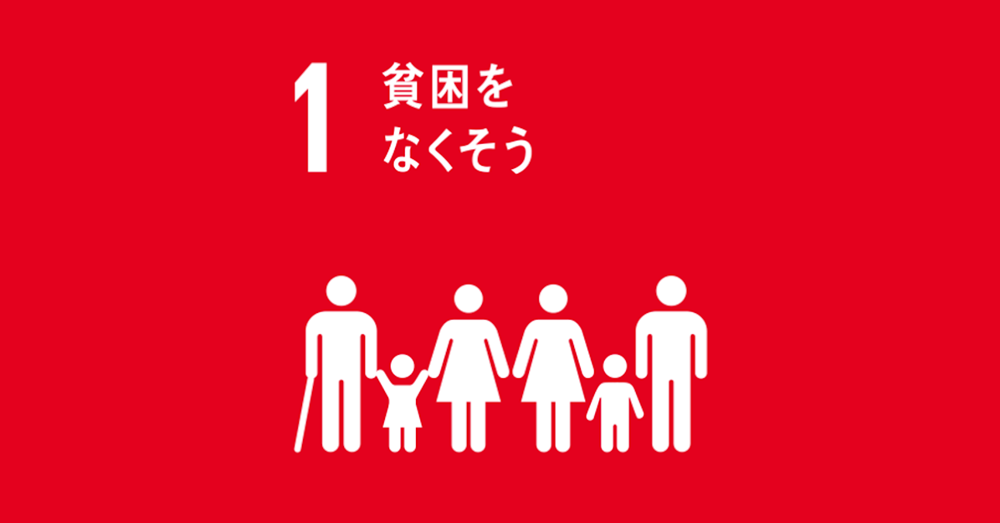

ハイチ共和国は、カリブ海に浮かぶ島国で、エスパニョーラ島西部を領土としています。
気候 暑い季節は、6月30日から 9月4日まで 2.2 か月続き、1 日平均の最高気温は 34°C を超えます。 ハイチ共和国 における 1 年の最も暑い月は 8月で、平均最高気温は 34°C、最低気温は 27°C です。 涼しい季節は、11月16日から 2月26日まで 3.4 か月 続き、1 日当たりの平均最高気温は 32°C 未満です。 ハイチ共和国 における 1 年の最も寒い月は 1月で、平均最低気温は 23°C、最高気温は 31°C です。
2010年1月マグニチュード7の地震が首都ポルトープランスを襲いました。この地震の死者は31万人以上、現代世界において最大規模の被害を受けました。 さらにこの年の10月にはハリケーンなどによって発生した大規模洪水で衛生状況が悪化し、コレラが流行。1万人以上の死者が出ました。
ハイチはカリブ海に浮かぶ島国で、かつてフランスの植民地であったハイチは、1804年にフランスから独立。そのためポルトープランス周辺ではフランスの雰囲気を感じるスポットも点在しています。下の写真はノートルダム大聖堂で14年前の地震で破壊されてしまいました。
テニスで日本人初のグランドスラム優勝を果たした大坂なおみ選手の父親の祖国としても知られています。
また、ハイチはきれいな海と山が有名です
ハイチでは命を脅かす栄養不良に苦しむ子どもの数は、昨年から30％増加し、全国で4人に1人近くが慢性的な栄養不良に苦しんでいます。そこで、ユニセフは、ワクチンや栄養治療食の配布、安全な水と衛生設備の提供、子どもたちが学校に通い続けられるための支援、暴力から逃れた人たちの保護に注力しています。
